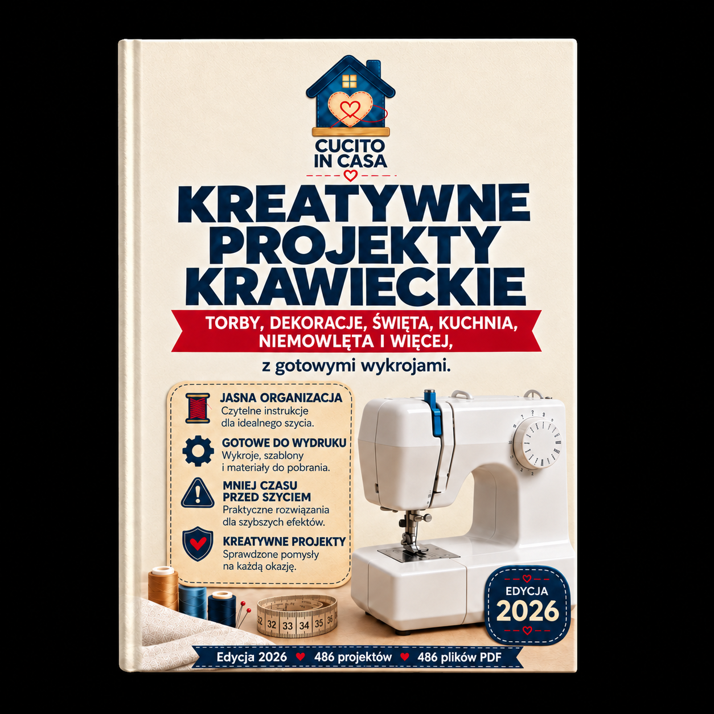

Bonus 5 z 5
Kreatywne Projekty Krawieckie
46 projektów krok po kroku — torby, dekoracje, kuchnia, niemowlęta, akcesoria, zwierzęta i więcej. Wybierz poziom trudności i szyj od dziś.

Biblia Wykrojów Krawiectwa
Spis Treści
- 1 · Jak korzystać z tego katalogu3
- 2 · Torebki i worki — 8 projektów5
- 3 · Dekoracje do domu — 8 projektów15
- 4 · Projekty świąteczne — 6 projektów25
- 5 · Kuchnia — 6 projektów32
- 6 · Dla niemowląt — 6 projektów39
- 7 · Akcesoria — 8 projektów46
- 8 · Dla zwierząt — 4 projekty54
- 9 · Szybki podgląd — tabele referencyjne58
- Następny krok61
Sekcja 1
Jak korzystać z tego katalogu
Zrozumiesz system oznaczeń, poziomy trudności i sposób organizacji projektów, żeby od razu wybrać odpowiedni dla siebie.
Ten katalog zawiera 46 starannie wybranych projektów krawieckich, podzielonych na siedem kategorii tematycznych. Każdy projekt zawiera listę materiałów, instrukcje krok po kroku i praktyczne wskazówki.
Jak czytać każdy projekt
Każdy projekt ma stałą strukturę:
- Nazwa i poziom trudności — kolorowa etykieta informuje, czy projekt jest dla początkujących, średnio zaawansowanych czy zaawansowanych.
- Lista materiałów — dokładny wykaz tkanin, dodatków i narzędzi. Zaznacz każdy element przed rozpoczęciem.
- Instrukcja krok po kroku — numerowane etapy od krojenia do wykończenia.
- Wskazówka lub ostrzeżenie — praktyczna rada, która oszczędzi czas lub zapobiegnie błędom.
Poziomy trudności
Łatwy
Proste szwy proste, bez zamków ani skomplikowanych wykończeń. Idealny na pierwszy projekt. Czas: 30–90 minut.
Średni
Wymagane zamki błyskawiczne, zakładki lub podszewka. Potrzebna podstawowa umiejętność obsługi maszyny. Czas: 1–3 godziny.
Zaawansowany
Dopasowanie kształtów, wiele warstw tkanin, precyzyjne wykończenia. Czas: 2–5 godzin.
Ekspercki
Złożone konstrukcje, łączenie technik, projekty wieloelementowe. Czas: 4+ godzin.
Zanim zaczniesz — ogólne zasady
Checklist startowy
- Upierz i wyprasuj tkaninę przed krojeniem (zapobiega kurczeniu się gotowego wyrobu)
- Przygotuj nożyczki krawieckie, szpilki, taśmę mierniczą i kredę krawiecką
- Sprawdź naciąg nici na próbnym kawałku tej samej tkaniny
- Wszystkie marginesy na szwy wynoszą 1 cm, chyba że projekt podaje inaczej
- Prasuj szwy po każdym kroku — to klucz do profesjonalnego wyglądu
WskazówkaZacznij od projektów oznaczonych jako „Łatwy" w kategorii, która najbardziej Cię interesuje. Każdy ukończony projekt buduje umiejętności potrzebne do trudniejszych.
Sekcja 2
Torebki i worki
8 projektów: od prostej torby na zakupy po elegancką torebkę na ramię. Nauczysz się wszywać zamki, dodawać paski i wykańczać podszewki.
2.1 Torba na zakupy (Tote Bag) Łatwy
Klasyczna torba shopper o wymiarach ok. 40 × 35 cm z wzmocnionymi uchwytami. Idealna na codzienne zakupy i jako zamiennik toreb plastikowych.
Materiały
- Tkanina bawełniana o gramaturze 200–280 g/m² — 50 × 90 cm (korpus)
- Tkanina bawełniana — 2 paski 8 × 60 cm (uchwyty)
- Nici w kolorze tkaniny
- Nożyczki, szpilki, kreda krawiecka
- Wytnij elementy — z tkaniny wytnij prostokąt 42 × 76 cm (zawiera margines 1 cm na szwy). Wytnij dwa paski 8 × 60 cm na uchwyty.
- Przygotuj uchwyty — każdy pasek złóż wzdłuż na pół prawą stroną do środka. Zszyj wzdłuż dłuższego boku (1 cm od krawędzi). Wywiń na prawą stronę za pomocą agrafki. Wyprasuj tak, aby szew był na środku spodu. Przeszyj ozdobnie po obu długich krawędziach (2 mm od brzegu).
- Zszyj korpus — prostokąt złóż na pół prawą stroną do środka (krótsze boki do siebie). Zszyj boki i dół ściegiem prostym na 1 cm od krawędzi.
- Wykończ szwy — obrzuć surowe krawędzie ściegiem zygzakowym lub owerlokowym, aby tkanina się nie strzępiła.
- Uformuj dno — w rogach dna utwórz trójkąty: spłaszcz narożnik tak, aby szew boczny pokrył się ze szwem dolnym. Odmierz 4 cm od czubka trójkąta i przeszyj prostopadle. Odetnij nadmiar tkaniny (1 cm za szwem).
- Podwiń górną krawędź — podwiń 1 cm do środka, potem kolejny 2 cm. Wyprasuj. Na razie nie zszywaj.
- Wepnij uchwyty — umieść końce uchwytów pod podwinięcie, symetrycznie po obu stronach torby (ok. 10 cm od każdego boku). Każdy koniec powinien wchodzić 3 cm pod podwinięcie.
- Przeszyj górną krawędź — przeszyj wzdłuż dolnej krawędzi podwinięcia, przytrzymując uchwyty. Dla wzmocnienia przeszyj każdy uchwyt dodatkowym kwadratem ze znakiem X w środku.
- Wyprasuj i gotowe — wyprasuj całą torbę, zwracając uwagę na górną krawędź i uchwyty.
WskazówkaAby torba była bardziej wytrzymała, użyj podwójnego ściegu przy szwie bocznym i dolnym — przeszyj drugi raz 2 mm od pierwszego ściegu.
2.2 Kosmetyczka na zamek Średni
Kosmetyczka o wymiarach ok. 22 × 14 × 6 cm z zamkiem błyskawicznym i podszewką. Doskonała na przybory toaletowe i drobiazgi do torebki.
Materiały
- Tkanina zewnętrzna (bawełna / canvas) — 2 prostokąty 24 × 20 cm
- Tkanina podszewkowa — 2 prostokąty 24 × 20 cm
- Flizelina jednoklejowa — 2 prostokąty 24 × 20 cm
- Zamek błyskawiczny spiralny — 25 cm
- Stopka do zamków błyskawicznych
- Nici dopasowane kolorystycznie
- Wzmocnij tkaninę — przyklej flizelinkę do lewej strony obu elementów tkaniny zewnętrznej za pomocą żelazka (temperatura bez pary, zgodnie z instrukcją flizeliny).
- Przyszyj zamek do jednej strony — ułóż element zewnętrzny prawą stroną do góry. Na nim połóż zamek zębami w dół, wyrównany z górną krawędzią. Na wierzchu połóż element podszewki lewą stroną do góry. Zepnij i przeszyj 0,7 cm od krawędzi zamka, używając stopki do zamków.
- Przyszyj zamek do drugiej strony — powtórz identycznie z drugą parą elementów (zewnętrzny + podszewka) po drugiej stronie zamka.
- Rozłóż i wyprasuj — otwórz tkaninę przy zamku i wyprasuj oba szwy, odsuwając tkaninę od zębów zamka. Przeszyj ozdobnie po 2 mm od zamka po obu stronach.
- Zszyj korpus — otwórz zamek do połowy. Ułóż elementy zewnętrzne prawymi stronami do siebie i elementy podszewki prawymi stronami do siebie. Zszyj dookoła (1 cm), zostawiając 8 cm otworu w dolnej krawędzi podszewki.
- Uformuj narożniki — na wszystkich czterech rogach (2 na tkaninie zewnętrznej, 2 na podszewce) utwórz trójkąty o szerokości 6 cm i przeszyj prostopadle. Odetnij nadmiar.
- Wywiń i zamknij — wywiń na prawą stronę przez otwór w podszewce. Zszyj otwór ściegiem krytym ręcznie lub maszynowo blisko krawędzi. Wpuść podszewkę do środka.
- Wykończ — wyprasuj całość. Gotowa kosmetyczka powinna trzymać kształt dzięki flizelinie.
Częsty błądNie zapominaj otworzyć zamka przed zszyciem korpusu — zamknięty zamek uniemożliwi wywrócenie kosmetyczki na prawą stronę.
2.3 Worek ze ściągaczem Łatwy
Uniwersalny worek o wymiarach ok. 30 × 40 cm ze sznurkiem ściągającym. Idealny jako worek na buty, bieliznę podróżną lub prezent.
Materiały
- Tkanina bawełniana — 2 prostokąty 32 × 44 cm
- Sznurek bawełniany — 2 odcinki po 80 cm
- Agrafka bezpieczna (do przewlekania sznurka)
- Nici w kolorze tkaniny
- Oznacz tunel na sznurek — na obu prostokątach zaznacz linię 5 cm od górnej krawędzi (tu będzie dolna krawędź tunelu) i drugą linię 2 cm od górnej krawędzi (po podwinięciu).
- Zszyj boki — złóż oba prostokąty prawymi stronami do siebie. Zszyj oba boki od dołu do znaku tunelu (5 cm poniżej górnej krawędzi). Obrzuć krawędzie zygzakiem.
- Przeszyj otwory tunelu — w miejscu, gdzie kończy się szew boczny, zawiń surową krawędź otworu o 0,5 cm i przeszyj, tworząc czysty otwór po obu stronach.
- Utwórz tunel — podwiń górną krawędź o 1 cm do środka, potem o kolejne 3 cm. Wyprasuj. Przeszyj wzdłuż dolnej krawędzi podwinięcia.
- Przewlecz sznurki — za pomocą agrafki przewlecz jeden sznurek przez cały tunel (wejście z jednej strony, wyjście z tej samej). Drugi sznurek przewlecz od drugiej strony. Zawiąż końce każdego sznurka razem.
- Wywiń i gotowe — wywiń worek na prawą stronę. Pociągnij za oba sznurki jednocześnie, aby zamknąć worek.
WskazówkaAby sznurek się nie strzępił, przypal końce zapalniczką (włókna syntetyczne) lub zawiąż węzełki i obetnij nożyczkami (bawełna).
2.4 Torebka na ramię (Crossbody) Zaawansowany
Mała torebka na ramię z klapą, regulowanym paskiem i kieszenią wewnętrzną. Wymiary ok. 22 × 18 × 5 cm.
Materiały
- Tkanina zewnętrzna (canvas / jeans / sztruks) — 50 × 80 cm
- Tkanina podszewkowa — 50 × 60 cm
- Flizelina z klejem — 50 × 80 cm
- Zamek błyskawiczny — 20 cm (kieszeń wewnętrzna)
- Magnetyczne zapięcie — 1 szt.
- Regulacja paska: 2 klamry przesuwne (25 mm) + 2 karabińczyki
- Nici wzmocnione
- Wytnij elementy — z tkaniny zewnętrznej: przód 24 × 20 cm, tył 24 × 20 cm, klapa 24 × 16 cm (×2), klin boczny 7 × 50 cm (×2), pasek 7 × 130 cm. Z podszewki: przód 24 × 20 cm, tył 24 × 20 cm, kieszeń na zamek 24 × 30 cm. Wzmocnij wszystkie elementy zewnętrzne flizelką.
- Przygotuj klapę — złóż dwa elementy klapy prawymi stronami do siebie. Zszyj dół i boki, zostawiając górną krawędź otwartą. Wytnij narożniki, wywiń, wyprasuj. Przeszyj ozdobnie 3 mm od krawędzi.
- Zamontuj magnes — w środku klapy (od spodu, 2 cm od dolnej krawędzi) zamontuj jedną połówkę magnetycznego zapięcia. Drugą połówkę zamontuj na przedniej ścianie torby (5 cm od górnej krawędzi, na środku). Użyj kwadratowego wzmocnienia z flizeliny pod każdym magnesem.
- Przyszyj kieszeń na zamek — do jednego z elementów podszewki przyszyj zamek błyskawiczny, tworząc kieszonkę wewnętrzną o głębokości 14 cm.
- Zszyj kliny boczne z elementem tylnym — przyszyj kliny boczne do tylnego panelu zewnętrznego, zaczynając od dolnych rogów. Kliny formują dno i boki torby. Natnij tkaninę w narożnikach, aby łagodnie przeszła zakręty.
- Przyszyj klapę — umieść surową krawędź klapy na górnej krawędzi tylnego panelu (prawa strona klapy skierowana do prawej strony panelu). Zepnij i przefastryguj.
- Dołącz przód — przyszyj przedni panel do wolnych krawędzi klinów bocznych. Obrzuć wszystkie szwy.
- Zszyj podszewkę — analogicznie zszyj elementy podszewki, zostawiając 10 cm otworu w dnie.
- Przygotuj pasek — złóż pasek wzdłuż na pół prawą stroną do środka, zszyj wzdłuż, wywiń, wyprasuj. Przeszyj ozdobnie po obu krawędziach. Przełóż przez klamry przesuwne i karabińczyki.
- Połącz i wykończ — włóż torbę zewnętrzną do podszewki (prawe strony do siebie), zszyj górną krawędź. Wywiń przez otwór, zszyj otwór, wpuść podszewkę do środka. Przymocuj karabińczyki paska do uszek przy bokach torby (uszka wszywasz w krok 5 między klinami a panelami).
Częsty błądPodczas klejenia flizeliny nie przesuwaj żelazka — przykładaj je i dociskaj na 8–10 sekund, potem przenoś. Przesuwanie powoduje marszczenie.
2.5 Pokrowiec na laptopa Średni
Miękki pokrowiec na laptopa 13–15 cali z klapą na rzep i wyściółką z watoliny.
Materiały
- Tkanina zewnętrzna (canvas / jeans) — 2 prostokąty: wymiar laptopa + 3 cm na każdy bok
- Watolina / flizelina piankowa — 2 prostokąty tych samych wymiarów
- Tkanina podszewkowa — 2 prostokąty + 1 klapa
- Taśma rzepowa — 15 cm (haczyki i pętelki)
- Nici wzmocnione
- Zmierz laptopa — zmierz szerokość, wysokość i grubość. Dodaj po 2 cm na szwy i 1 cm na luz z każdej strony. Klapa: szerokość laptopa + 4 cm × 12 cm.
- Przygotuj warstwy — każdy panel to trzy warstwy: tkanina zewnętrzna + watolina + podszewka. Zepnij warstwy i przefastryguj po obwodzie.
- Pikuj panele — przeszyj każdy panel liniami pionowymi co 5 cm lub ukośnymi rombami. Pikowanie utrzymuje watolinę na miejscu.
- Przygotuj klapę — zszyj klapę z tkaniny zewnętrznej i podszewki (prawa do prawej), wywiń, wyprasuj. Przyszyj część rzepu (haczyki) od spodu klapy, 2 cm od krawędzi.
- Zszyj korpus — złóż dwa panele podszewkami do siebie. Klapę wepnij między panele u góry (z tyłu). Zszyj boki i dół.
- Obramuj krawędzie — obrzuć wszystkie surowe krawędzie lamówką lub ściegiem zygzakowym. Górną krawędź podwiń 1 cm i przeszyj.
- Przyszyj rzep — na przednim panelu (od wewnątrz) przyszyj część rzepu (pętelki) w miejscu odpowiadającym zapięciu na klapie.
WskazówkaDla lepszej ochrony laptopa, użyj podwójnej warstwy watoliny lub flizeliny piankowej o grubości 5 mm.
2.6 Torba na zakupy wielokrotnego użytku Łatwy
Lekka, składana torba na zakupy, którą można zmieścić w kieszeni. Wymiary rozłożonej: ok. 38 × 42 cm.
Materiały
- Tkanina nylonowa lub cienka bawełna — 40 × 90 cm
- Tkanina na kieszonkę do złożenia — 12 × 14 cm (×2)
- Gumka okrągła — 8 cm
- Guzik — 1 szt.
- Nici
- Wytnij korpus — prostokąt 40 × 88 cm. Uchwyty: 2 paski 6 × 50 cm.
- Przyszyj kieszonkę — zszyj oba prostokąty kieszonki prawymi stronami, wywiń, wyprasuj. Przyszyj do jednej z wewnętrznych stron torby, blisko dna, zostawiając górną krawędź otwartą.
- Zszyj korpus i uchwyty — postępuj jak przy torbie tote (projekt 2.1). Złóż na pół, zszyj boki i dół, podwiń górę z uchwytami.
- Dodaj zapięcie do składania — na kieszonce przyszyj pętelkę z gumki, a na tyle torby guzik. Po złożeniu torby w kieszonkę, pętelka zapina się na guzik.
- Składanie — złóż torbę w prostokąt, zroluj od dołu do góry, wetknij do kieszonki i zapnij pętelkę.
WskazówkaTkaniny nylonowe szyj igłą kulkową (nr 70–80), która rozsuwa włókna zamiast je przekłuwać, zapobiegając drobnym dziurkom.
2.7 Saszetka na kosmetyki (duża) Średni
Prostokątna kosmetyczka podróżna o wymiarach 26 × 16 × 8 cm z szerokim otwarciem dzięki zamkowi biegnącemu wokół trzech boków.
Materiały
- Tkanina zewnętrzna wodoodporna / laminowana — 2 prostokąty 28 × 20 cm
- Podszewka — 2 prostokąty 28 × 20 cm
- Zamek błyskawiczny spiralny — 65 cm (lub 3 zamki po 25 cm połączone)
- Flizelina piankowa — 2 prostokąty 28 × 20 cm
- Nici poliesterowe
- Wzmocnij panele — podklej flizelinkę piankową do lewej strony elementów zewnętrznych.
- Przyszyj zamek do górnej krawędzi — analogicznie do projektu 2.2, ale zamek biegnie wokół trzech krawędzi (góra + oba boki, do połowy). Zacznij od górnej krawędzi, potem kontynuuj w dół po bokach.
- Zszyj dno i dolne boki — zszyj dolne krawędzie, które nie mają zamka.
- Utwórz narożniki — spłaszcz wszystkie cztery narożniki na 8 cm i przeszyj. Powtórz dla podszewki.
- Połącz z podszewką — włóż podszewkę do środka, podwiń surowe krawędzie przy zamku i przyszyj ręcznie ściegiem krytym.
Częsty błądPrzy tkaninach laminowanych nie używaj szpilek — zostawiają trwałe dziurki. Zamiast tego użyj klipsów krawieckich lub taśmy dwustronnej.
2.8 Piórnik Łatwy
Prosty piórnik na zamek o wymiarach ok. 20 × 8 cm. Szybki projekt na 30 minut — idealny dla początkujących.
Materiały
- Tkanina bawełniana — 2 prostokąty 22 × 12 cm
- Tkanina podszewkowa — 2 prostokąty 22 × 12 cm
- Zamek błyskawiczny — 20 cm
- Nici
- Przyszyj zamek — ułóż element zewnętrzny prawą stroną do góry, na nim zamek zębami w dół, a na wierzchu podszewkę lewą stroną do góry. Zszyj górną krawędź. Powtórz z drugą parą po drugiej stronie zamka.
- Rozłóż i wyprasuj — otwórz tkaninę od zamka, wyprasuj. Przeszyj ozdobnie po obu stronach zamka.
- Otwórz zamek do połowy — uchyl zamek, żeby potem móc wywinąć piórnik.
- Zszyj dookoła — ułóż elementy zewnętrzne razem i podszewkowe razem. Zszyj dookoła, zostawiając 5 cm otworu w podszewce.
- Wywiń i zamknij — wywiń przez otwór, zszyj otwór, wpuść podszewkę do środka. Wyprasuj.
WskazówkaDodaj do jednego końca zamka małą pętelkę z taśmy rypsowej — ułatwia otwieranie i wygląda profesjonalnie.
Sekcja 3
Dekoracje do domu
8 projektów, które odmienią wnętrze: poszewki, bieżniki, zasłony, organizery i więcej.
3.1 Poszewka na poduszkę dekoracyjną Łatwy
Poszewka z zakładką (kopertowa) na poduszkę 45 × 45 cm. Nie wymaga zamka błyskawicznego.
Materiały
- Tkanina dekoracyjna — 1 prostokąt 47 × 47 cm (przód) + 2 prostokąty 47 × 32 cm (tył z zakładką)
- Wkład poduszki 45 × 45 cm
- Nici dopasowane kolorystycznie
- Podwiń krawędzie zakładki — na obu tylnych elementach podwiń jedną dłuższą krawędź: 1 cm + 2 cm. Wyprasuj i przeszyj.
- Ułóż elementy — połóż przód prawą stroną do góry. Na nim ułóż oba tylne elementy lewą stroną do góry, tak aby podwinięte krawędzie zachodziły na siebie na środku, a zewnętrzne krawędzie pokrywały się z krawędziami przodu.
- Zszyj dookoła — zszyj wszystkie cztery krawędzie na 1 cm od brzegu.
- Przytnij narożniki — odetnij rogi ukośnie (2 mm od ściegu), aby po wywinięciu narożniki były ostrzejsze.
- Wywiń i wyprasuj — wywiń na prawą stronę, wypchnij narożniki (użyj patyczka do sushi, nie nożyczek). Wyprasuj. Włóż wkład.
WskazówkaPrzetestuj tkaninę na kurczenie się: upierz próbkę 15 × 15 cm, zmierz po wyschnięciu. Jeśli się skurczyła, upierz cały metraż przed krojeniem.
3.2 Bieżnik na stół Łatwy
Elegancki bieżnik o wymiarach ok. 40 × 140 cm z ozdobnym obszytem.
Materiały
- Tkanina główna (len / bawełna / mieszanka) — 44 × 144 cm
- Tkanina kontrastowa na obramowanie — 4 paski 5 × 150 cm (boki) + 4 paski 5 × 50 cm (krótsze boki)
- Nici dekoracyjne
- Przygotuj tkaninę — upierz i wyprasuj tkaninę główną. Wyrównaj krawędzie, wyciągając jedną nitkę z osnowy i tnąc wzdłuż niej (gwarantuje idealnie prosty brzeg).
- Przygotuj obramowanie — złóż każdy pasek obramowania na pół wzdłuż, lewą stroną do środka. Wyprasuj.
- Przyszyj boki dłuższe — przyszyj surowy brzeg paska do prawej strony bieżnika (1 cm od krawędzi). Odwiń pasek, zawiń na lewą stronę, podwiń krawędź i przyszyj ściegiem krytym lub maszynowo od prawej strony.
- Przyszyj krótsze boki — powtórz na krótszych końcach, chowając końce pasków do środka.
- Wykończ narożniki — starannie złóż narożniki skośnie pod kątem 45° (tzw. miter). Zszyj ręcznie kilkoma ściegami.
- Wyprasuj — wyprasuj cały bieżnik, zwracając uwagę na obramowanie.
WskazówkaAby bieżnik lepiej leżał na stole i się nie przesuwał, przyszyj od spodu na rogach małe krążki antypoślizgowe (dostępne w sklepach meblowych).
3.3 Proste zasłony na tunelu Łatwy
Para zasłon z tunelem na karnisz. Wymiary dostosowujesz do swojego okna.
Materiały
- Tkanina zasłonowa — szerokość okna × 1,5–2 (dla marszczenia) × 2 (dwie zasłony), długość = od karnisza do pożądanej długości + 15 cm (tunel i obszycie)
- Nici w kolorze tkaniny
- Karnisz lub pręt
- Oblicz wymiary — zmierz szerokość okna. Każda zasłona powinna mieć 1–1,5 × szerokość okna (dla fałd). Długość: od karnisza do parapetu (lub podłogi) + 10 cm na tunel + 5 cm na dolne obszycie.
- Obszyj boki — podwiń boczne krawędzie 1 cm + 2 cm. Wyprasuj i przeszyj.
- Obszyj dół — podwiń dolną krawędź 1 cm + 4 cm. Wyprasuj i przeszyj.
- Utwórz tunel na karnisz — podwiń górną krawędź o 1 cm, potem o tyle, ile wymaga obwód karnisza + 2 cm luzu. Wyprasuj. Przeszyj wzdłuż dolnej krawędzi podwinięcia.
- Nawlecz na karnisz — przewlecz karnisz przez tunel i zamontuj.
Częsty błądNie kro tkaniny zasłonowej od razu — powieś ją luźno na 24 godziny, żeby się ułożyła pod własnym ciężarem. Potem wyrównaj i obszyj dół.
3.4 Organizer ścienny Średni
Organizer z 4–6 kieszeniami do zawieszenia na ścianie — na przybory krawieckie, listy zakupów lub akcesoria w przedpokoju.
Materiały
- Tkanina główna (canvas / len) — 45 × 70 cm (baza)
- Tkanina na kieszenie — 45 × 100 cm (w sumie na 6 kieszeni)
- Flizelina lub watolina cienka — 45 × 70 cm
- Drewniany kołek / drążek — 48 cm (do zawieszenia)
- Sznurek — 60 cm
- Nici
- Przygotuj bazę — połącz tkaninę główną z flizelką. Podwiń i przeszyj boki oraz dół (1 + 1 cm). Na górze utwórz tunel na kołek: podwiń 1 cm + 5 cm i przeszyj.
- Wytnij kieszenie — 2 rzędy po 3 kieszenie. Każda kieszeń: 15 × 18 cm. Podwiń górną krawędź każdej kieszeni (1 + 1,5 cm) i przeszyj — to będzie widoczna krawędź.
- Rozmieść kieszenie — zaplanuj układ: 3 kieszenie w górnym rzędzie, 3 w dolnym. Odstęp między kieszeniami: ok. 1,5 cm. Przypnij szpilkami.
- Przyszyj kieszenie — przyszyj boki i dół każdej kieszeni do bazy. Boki podwiń o 1 cm do środka przed przyszyciem.
- Opcja: dodaj zakładki — aby kieszenie miały głębokość (nie leżały płasko), utwórz zakładkę 2 cm na dole każdej kieszeni przed przyszyciem.
- Przewlecz kołek i zawieś — wsadź kołek w tunel, przywiąż sznurek na końcach i powieś na gwoździu lub haku.
WskazówkaOznacz każdą kieszeń małą naszywką lub haftem — ułatwi organizację i doda uroku.
3.5 Koszyk tekstylny Średni
Sztywny koszyk z tkaniny o wymiarach ok. 20 × 15 × 15 cm. Idealny na nici, przybory lub rośliny w doniczkach.
Materiały
- Tkanina zewnętrzna — 2 prostokąty 22 × 44 cm
- Tkanina podszewkowa — 2 prostokąty 22 × 44 cm
- Flizelina sztywna (Decovil / S320) — 2 prostokąty 22 × 44 cm
- Nici
- Wzmocnij tkaninę — przyklej flizelinkę sztywną do lewej strony elementów zewnętrznych. To daje koszykowi strukturę.
- Zszyj korpus zewnętrzny — złóż na pół (krótsze boki do siebie), zszyj boki i dół (1 cm).
- Utwórz dno — spłaszcz narożniki na 15 cm (każda strona po 7,5 cm od czubka trójkąta) i przeszyj.
- Zszyj podszewkę — powtórz kroki 2–3, zostawiając 8 cm otworu w jednym boku.
- Połącz — włóż korpus zewnętrzny do podszewki (prawe strony razem). Zszyj górną krawędź dookoła.
- Wywiń i podwiń — wywiń przez otwór w podszewce. Zszyj otwór. Wpuść podszewkę do środka. Przeszyj ozdobnie górną krawędź. Podwiń górny brzeg na zewnątrz o 5 cm, tworząc mankiet.
WskazówkaIm sztywniejsza flizelina, tym lepiej koszyk trzyma kształt. Do większych koszy użyj flizeliny Decovil Light lub S520.
3.6 Podkładki pod kubki Łatwy
Zestaw 4 okrągłych podkładek z patchworku o średnicy 12 cm. Szybki projekt na resztki tkanin.
Materiały
- Resztki tkanin bawełnianych — po 2–3 kawałki na podkładkę
- Watolina cienka — 4 kółka o średnicy 14 cm
- Tkanina na tył — 4 kółka o średnicy 14 cm
- Lamówka bawełniana — ok. 50 cm na podkładkę (200 cm łącznie)
- Nici
- Przygotuj patchwork — z resztki tkanin zszyj prostokąty lub paski, tworząc tkaninę wielobarwną. Wyprasuj szwy na jedną stronę. Wytnij kółka o średnicy 14 cm (szablon z kartonu).
- Złóż warstwy — dla każdej podkładki: tył (lewą stroną do góry) + watolina + patchwork (prawą stroną do góry). Zepnij szpilkami.
- Pikuj — przeszyj przez wszystkie warstwy: liniami prostymi, promieniście od środka lub po spirali.
- Obszyj lamówką — przyszyj lamówkę dookoła krawędzi: najpierw surową krawędź lamówki do prawej strony, potem zawiń na lewą stronę i przyszyj ściegiem krytym.
WskazówkaZrób dodatkowy szablon o 1 cm mniejszy i używaj go do wyrównania warstw — okrągłe kształty łatwo się przesuwają podczas pikowania.
3.7 Wałek pod drzwi (Draft Stopper) Łatwy
Długi wałek blokujący przeciąg pod drzwiami. Wymiary: ok. 85 × 10 cm (dostosuj do szerokości drzwi).
Materiały
- Tkanina bawełniana / len — 2 prostokąty 87 × 14 cm
- 2 kółka z tkaniny o średnicy 14 cm (na końce)
- Wypełnienie: ryż, groch łuskany, piasek kwarcowy lub watolina
- Nici
- Zszyj cylinder — złóż oba prostokąty prawymi stronami do siebie. Zszyj wzdłuż długich krawędzi (1 cm). Otrzymasz długi rękaw.
- Wsztyj jedno koło — jedno kółko wepnij w otwór rękawa (prawa do prawej), zrób nacięcia co 1 cm w marginesie na szwy, aby tkanina się ułożyła po łuku. Zszyj dookoła.
- Wywiń — wywiń rękaw na prawą stronę przez otwarty koniec.
- Napełnij — napełnij wałek wybranym wypełnieniem. Ryż lub groch: wałek ciężki, dobrze blokuje. Watolina: lekki, ale mniej skuteczny.
- Zamknij drugi koniec — podwiń surowe krawędzie do środka (1 cm), wepnij drugie kółko i zszyj ręcznie ściegiem krytym dookoła.
Częsty błądNie napełniaj wałka zbyt ciasno — powinien być na tyle elastyczny, żeby przylegać do podłogi i drzwi jednocześnie.
3.8 Pokrowiec na abażur Średni
Nowy pokrowiec na istniejący stożkowy abażur lampy stołowej, odmieni wygląd lampy bez kupowania nowej.
Materiały
- Istniejący abażur (stożek lub cylinder)
- Tkanina bawełniana cienka (przepuszczająca światło) — metraż zależy od wymiarów abażuru
- Taśma dwustronna krawiecka
- Klej tekstylny
- Lamówka lub taśma rypsowa — obwód górny + dolny + 5 cm
- Zdejmij stary pokrowiec — ostrożnie odklej lub odkręć stary materiał ze stelaża. Zachowaj go jako szablon.
- Stwórz szablon — obróć abażur po arkuszu papieru (rysując obrys) lub odmierz: górny obwód, dolny obwód i wysokość tworzącej (po skosie). Dodaj 2 cm na zakładkę + 2 cm na podwinięcie u góry i dołu.
- Wytnij tkaninę — przyłóż szablon do tkaniny i wytnij, dodając margines.
- Podwiń krawędzie — podwiń górną i dolną krawędź o 1 cm i przyprasuj. Przeszyj lub przyklej taśmą dwustronną.
- Naklej na stelaż — nałóż tkaninę na stelaż, naciągając równomiernie. Na zakładce podwiń surową krawędź i przyklej klejem tekstylnym.
- Obszyj krawędzie — na górnej i dolnej krawędzi przyklej lamówkę lub taśmę rypsową, aby zakryć surowe brzegi i nadać estetyczny wygląd.
Częsty błądWybieraj tkaniny wyłącznie bawełniane lub lniane, niesyntetyczne — syntetyki pod wpływem ciepła żarówki mogą się topić lub żółknąć. Sprawdź odległość tkaniny od żarówki.
Sekcja 4
Projekty świąteczne
6 projektów na Boże Narodzenie, Wielkanoc i inne okazje. Uszyte prezenty mają duszę, której nie ma żaden kupiony podarek.
4.1 Skarpety (Boty) świąteczne Średni
Klasyczne duże skarpety świąteczne do zawieszenia nad kominkiem lub na ścianie. Wymiary: ok. 45 × 20 cm.
Materiały
- Tkanina główna (welur / flanela / bawełna świąteczna) — 50 × 50 cm (×2 sztuki na jedną skarpetę)
- Tkanina podszewkowa — 50 × 50 cm (×2)
- Tkanina kontrastowa na mankiet — 2 prostokąty 22 × 18 cm
- Taśma rypsowa — 10 cm (pętelka do zawieszenia)
- Nici, ozdoby (koronka, aplikacje — opcjonalnie)
- Przygotuj szablon — narysuj na papierze kształt skarpety (lub wydrukuj): stopa ok. 28 cm, cholewka ok. 20 cm, szerokość u góry ok. 18 cm. Dodaj 1 cm na szwy.
- Wytnij elementy — z tkaniny głównej wytnij 2 elementy (lustrzane odbicie). Z podszewki wytnij 2 elementy. Z tkaniny kontrastowej wytnij 2 prostokąty na mankiet.
- Zszyj korpus zewnętrzny — złóż oba elementy zewnętrzne prawymi stronami razem. Zszyj dookoła, oprócz górnej krawędzi. Natnij tkaninę w zaokrągleniach co 1 cm. Wywiń.
- Zszyj podszewkę — analogicznie, ale nie wywijaj.
- Przygotuj mankiet — złóż dwa prostokąty prawymi stronami, zszyj krótsze boki, tworząc pierścień. Złóż pierścień na pół (lewymi stronami razem), surowe krawędzie wyrównaj.
- Połącz warstwy — włóż podszewkę do korpusu zewnętrznego (lewe strony do siebie). Na górną krawędź nałóż mankiet (surowe krawędzie wyrównane) i pętelkę do zawieszenia. Zszyj dookoła górnej krawędzi. Odwiń mankiet do góry.
WskazówkaSpersonalizuj skarpetę: na mankiecie wyhaftuj imię (przed przyszyciem mankietu do korpusu) — to prosty detal, który robi ogromne wrażenie.
4.2 Serweta wielkanocna do koszyczka Łatwy
Serweta z falbanką do wyłożenia wielkanocnego koszyczka. Średnica ok. 40 cm.
Materiały
- Tkanina bawełniana (biała / w wiosenne wzory) — koło o średnicy 44 cm
- Tkanina na falbankę — pasek 8 × 200 cm (lub kilka krótszych zszytych)
- Koronka bawełniana — 140 cm (opcjonalnie)
- Nici białe
- Wytnij koło — z tkaniny głównej wytnij koło o średnicy 44 cm (użyj talerza lub szablonu z kartonu).
- Przygotuj falbankę — obszyj jeden długi bok paska wąskim podwinięciem (0,5 cm + 0,5 cm). Na surowej krawędzi przeszyj dwoma rzędami ściegów (na 0,5 cm i 1 cm od krawędzi) z luźnym naciągiem — pociągnij za nici, aby zmarszyć do obwodu koła.
- Przyszyj falbankę — zepnij zmarszczony pasek do krawędzi koła (prawą do prawej), równomiernie rozkładając marszczenie. Zszyj (1 cm).
- Opcja: dodaj koronkę — koronkę przyszyj na krawędzi falbanki od dołu, zanim przyszyjesz falbankę do koła (łatwiej) lub po zakończeniu.
- Obrzuć krawędzie — obrzuć szew łączenia zygzakiem. Odwiń falbankę na dół, wyprasuj szew.
WskazówkaUszyj dwie serwety: jedną do wyłożenia koszyczka (większą), drugą do przykrycia na wierzch (mniejszą, ok. 30 cm).
4.3 Woreczki prezentowe wielokrotnego użytku Łatwy
Zestaw 3–5 woreczków na prezenty w różnych rozmiarach, z satynową wstążką. Zastępują jednorazowy papier pakowy.
Materiały
- Tkanina bawełniana w świąteczne wzory — resztki / skrawki
- Wstążka satynowa — 40 cm na worek (× liczba worków)
- Nici
- Zdecyduj o rozmiarach — mały: 12 × 16 cm, średni: 18 × 24 cm, duży: 25 × 35 cm (wymiary gotowe). Wytnij prostokąty: szerokość × 2 + 2 cm (szwy), wysokość + 7 cm (tunel na wstążkę).
- Zszyj boki i dół — złóż na pół prawą stroną do środka. Zszyj boki od dołu do 5 cm poniżej górnej krawędzi. Na niezszytym odcinku (5 cm) podwiń krawędzi i przeszyj — to otwory na wstążkę.
- Utwórz tunel — podwiń górną krawędź 1 cm + 2,5 cm. Przeszyj wzdłuż dolnej krawędzi podwinięcia.
- Przewlecz wstążkę — za pomocą agrafki przewlecz wstążkę przez tunel (wejście i wyjście przez ten sam otwór). Zawiąż końce.
- Wywiń i gotowe — wywiń worek na prawą stronę, włóż prezent, zaciągnij wstążkę.
WskazówkaUszyte woreczki to również sam w sobie prezent — zestaw 5 woreczków w różnych wzorach, przewiązany wstążką, to praktyczny podarek dla osób dbających o ekologię.
4.4 Kalendarz adwentowy Zaawansowany
Wiszący kalendarz adwentowy z 24 kieszonkami — jeden na każdy dzień do Wigilii.
Materiały
- Tkanina bazowa (len / juta) — 60 × 100 cm
- Resztki tkanin bawełnianych (różne wzory) — na 24 kieszonki, każda ok. 10 × 10 cm
- Filc — na cyfry 1–24 lub tkanina kontrastowa
- Klej tekstylny lub flizelina dwuklejowa — do aplikacji cyfr
- Drewniany kołek — 65 cm
- Sznurek jutowy — 80 cm
- Nici w różnych kolorach
- Przygotuj bazę — podwiń i przeszyj krawędzie boczne i dolną (1 + 1 cm). Na górze utwórz tunel na kołek (1 + 5 cm).
- Zaplanuj układ kieszonek — narysuj siatkę: 4 kolumny × 6 rzędów. Kieszonki 10 × 10 cm z odstępem 2 cm między nimi. Zaznacz pozycje na bazie kredą.
- Przygotuj kieszonki — wytnij 24 prostokąty 12 × 14 cm z różnych tkanin. Górną krawędź podwiń (1 + 1 cm) i przeszyj — to otwór kieszonki. Boki i dół podwiń o 1 cm i przyprasuj.
- Dodaj numery — z filcu wytnij cyfry 1–24 (ok. 2 cm wysokości). Przyklej lub przyszyj ściegiem aplikacyjnym do każdej kieszonki.
- Przyszyj kieszonki — ułóż kieszonki według siatki. Przyszyj boki i dół każdej kieszonki do bazy. Kolejność: od dołu do góry, żeby nie przeszyć przez wcześniejsze kieszonki.
- Opcja: zakładki — na dole każdej kieszonki zrób zakładkę 1 cm (marszcząc dół), aby kieszonka miała głębokość na drobne upominki.
- Montaż — przewlecz kołek przez tunel, przywiąż sznurek i powieś.
WskazówkaZamiast cyfr z filcu możesz wyhaftować numery na kieszonkach ściegiem łańcuszkowym — trwa dłużej, ale efekt jest wyjątkowy i trwały na lata.
4.5 Ozdoby choinkowe z tkaniny Łatwy
Zestaw 6 ozdób: gwiazdki, serduszka i choinki z filcu lub bawełny, wypełnione watoliną.
Materiały
- Filc lub bawełna w świątecznych kolorach — resztki (po ok. 15 × 15 cm na ozdobę)
- Watolina do wypełnienia — mała ilość
- Nici haftowane (muliné) — złote, srebrne, czerwone
- Wstążka cienka — 10 cm na ozdobę (do zawieszenia)
- Koraliki / guziczki / cekinki — opcjonalnie
- Przygotuj szablony — narysuj na kartonie: gwiazdkę (ok. 8 cm), serduszko (ok. 7 cm), choinkę (ok. 9 cm). Każdy kształt w 2 egzemplarzach.
- Wytnij elementy — każdy kształt wytnij dwukrotnie z wybranej tkaniny. Filc: wytnij bez marginesu. Bawełna: dodaj 0,5 cm na szwy.
- Ozdoby — na jednym z dwóch elementów (przednia strona) przyszyj ozdoby: haft ściegiem płaskim, naszyte koraliki, mały guzik — co chcesz. Zrób to przed zszyciem halwek.
- Zszyj i wypełnij — złóż pary lewymi stronami (filc) lub prawymi stronami (bawełna). Filc: zszyj ściegiem okrętkowym na zewnątrz nićmi haftowanymi, zostawiając 2 cm otworu. Bawełna: zszyj maszynowo, wywiń, wyprasuj. Napełnij lekko watoliną.
- Dodaj pętelkę — przed zamknięciem otworu wepnij pętelkę ze wstążki. Zszyj otwór.
WskazówkaDo wypełniania małych kształtów używaj patyczka do sushi — pozwala wpychać watolinę precyzyjnie w rogi gwiazdek i czubki choinek.
4.6 Dekoracja środka stołu (Centerpiece) Średni
Okrągła podkładka dekoracyjna pod wazon lub świecę z uszytych płatków tkaniny. Średnica ok. 35 cm.
Materiały
- Tkanina bawełniana — 3 różne wzory/kolory, po ok. 30 × 60 cm
- Watolina cienka — koło o średnicy 37 cm
- Tkanina na spód — koło o średnicy 37 cm
- Nici
- Wytnij płatki — z każdej tkaniny wytnij 6 „płatków" w kształcie liścia o wymiarach ok. 15 × 8 cm (18 płatków łącznie). Użyj szablonu z kartonu.
- Przygotuj płatki — każdy płatek złóż na pół wzdłuż (prawą stroną do środka), zszyj zaokrąglony koniec, wywiń i wyprasuj. Na otwartym końcu zrób 2 małe zakładki (marszczenie), żeby płatek miał kształt 3D.
- Ułóż na bazie — na koło watoliny + tkaniny spodu ułóż płatki: 6 w wewnętrznym kręgu (czubkami do środka), 12 w zewnętrznym kręgu (nakładające się lekko). Przypnij szpilkami.
- Przyszyj — przeszyj przez środek każdego płatka, mocując go do bazy. Możesz przeszyć jednym okrągłym ściegiem 3 cm od środka.
- Obszyj krawędź — obramuj zewnętrzną krawędź lamówką lub podwiń tkaninę spodu na wierzch i przeszyj.
- Zamaskuj środek — z tkaniny wytnij koło o średnicy 6 cm, podwiń krawędzie i przyszyj na środku, zakrywając szwy.
WskazówkaDostosuj kolory do okazji: czerwień i zieleń na Boże Narodzenie, pastele na Wielkanoc, pomarańcz i złoto na jesień.
Sekcja 5
Kuchnia
6 projektów kuchennych: fartuch, rękawice, torebka na chleb i więcej. Wszystko z tkanin bezpiecznych przy kontakcie z żywnością.
W kuchni ważne są tkaniny naturalne (bawełna, len) o gramaturze co najmniej 150 g/m². Unikaj tkanin syntetycznych przy gorących powierzchniach. Przed pierwszym użyciem upierz każdy projekt w 40°C.
5.1 Fartuch kuchenny Średni
Klasyczny fartuch z kieszeniami kangurowymi i regulowaną taśmą na szyi. Jeden rozmiar — pasuje na większość sylwetek.
Materiały
- Tkanina bawełniana gęsta (canvas / dżins lekki) — 70 × 90 cm
- Tkanina kontrastowa na kieszeń — 35 × 22 cm
- Taśma bawełniana / rypsowa (2,5 cm szerokości) — 250 cm
- Klamra przesuwna lub pierścień D — 1 szt. (regulacja szyi)
- Nici
- Wytnij korpus fartucha — narysuj kształt fartucha na tkaninie: prostokąt 60 × 85 cm, zaokrąglony u dołu. Wytnij górną część: na środku (klatka piersiowa) szerokość 28 cm, po bokach schodzące skośnie do 60 cm na wysokości bioder. Możesz wyciąć kształt oparty na istniejącym fartuchu.
- Obszyj krawędzie — podwiń wszystkie krawędzie fartucha (1 cm + 1 cm) i przeszyj. Zacznij od boków, potem góra i dół.
- Przyszyj kieszeń — podwiń górną krawędź kieszeni (1 + 2 cm), przeszyj. Boki i dół podwiń o 1 cm i przyprasuj. Przyszyj na środku fartucha, ok. 30 cm od dolnej krawędzi.
- Opcja: podziel kieszeń — przeszyj kieszeń pionowo na środku, tworząc dwie osobne przegródki.
- Przygotuj paski — odetnij: pasek na szyję 70 cm, pasek na talię 2 × 90 cm. Przyszyj pasek na szyję do górnych rogów fartucha. Na jednym końcu zamontuj klamrę przesuwną do regulacji długości.
- Przyszyj paski na talię — przyszyj paski do boków fartucha na wysokości bioder. Wzmocnij miejsce przyszycia kilkoma warstwami ściegów.
WskazówkaJeśli szyjesz fartuch z cienkiej bawełny, podwój tkaninę na klatce piersiowej (od góry do linii bioder) — zwiększysz trwałość i ochronę przed plamami.
5.2 Rękawice kuchenne Średni
Para rękawic ochronnych do gorących naczyń. Trzy warstwy: tkanina zewnętrzna + watolina izolacyjna + podszewka.
Materiały
- Tkanina zewnętrzna (bawełna) — 4 elementy w kształcie rękawicy (2 × prawa, 2 × lewa)
- Watolina termoodporna / bawełniana gruba — 4 elementy (jak wyżej)
- Tkanina podszewkowa (bawełna) — 4 elementy
- Lamówka bawełniana — 2 × 30 cm
- Taśma rypsowa — 2 × 8 cm (pętelki do zawieszenia)
- Nici
- Przygotuj szablon — połóż rękę na kartonie, rozstaw palce. Obrysuj z marginesem 3 cm dookoła. Zaokrąglij czubki. Dodaj 1 cm na szwy. Wytnij szablon.
- Wytnij elementy — z każdej tkaniny wytnij po 2 elementy (lustrzane). Łącznie: 4 zewnętrzne, 4 watolinowe, 4 podszewkowe.
- Złóż warstwy — dla każdej połówki rękawicy: tkanina zewnętrzna + watolina. Spikuj: linie co 3 cm lub romby.
- Zszyj rękawicę zewnętrzną — złóż dwa spikowane elementy prawymi stronami razem. Zszyj dookoła (1 cm), oprócz otworu na nadgarstek. Natnij w zaokrągleniach. Wywiń.
- Zszyj podszewkę — analogicznie, ale nie wywijaj.
- Połącz — włóż podszewkę do rękawicy (lewe strony do siebie). Wyrównaj otwory na nadgarstek.
- Obszyj mankiet — wepnij pętelkę do zawieszenia. Obszyj otwór na nadgarstek lamówką, chowając surowe krawędzie.
- Powtórz — powtórz dla drugiej rękawicy.
Częsty błądNie używaj watoliny poliestrowej — pod wpływem ciepła może się stopić. Używaj watoliny bawełnianej lub specjalnej watoliny termoodpornej (Insul-Bright).
5.3 Torebka na chleb Łatwy
Lniana torebka na chleb z podwinięciem i sznurkiem — utrzymuje świeżość chleba dłużej niż plastikowa torba.
Materiały
- Tkanina lniana — 40 × 65 cm
- Sznurek bawełniany — 80 cm
- Nici lniane lub bawełniane
- Obszyj krótsze boki — podwiń oba krótsze boki tkaniny o 0,5 cm + 0,5 cm. Wyprasuj i przeszyj.
- Złóż i zszyj boki — złóż tkaninę na pół (obrobione krótsze boki do siebie, prawa strona do środka). Zszyj oba boki na 1 cm. Obrzuć surowe krawędzie.
- Utwórz tunel na sznurek — podwiń górną krawędź o 1 cm + 3 cm. Przeszyj wzdłuż dolnej krawędzi podwinięcia.
- Przewlecz sznurek — za pomocą agrafki przewlecz sznurek przez tunel.
- Wywiń i gotowe — wywiń torebkę na prawą stronę. Chleb przechowuj w chłodnym miejscu z lekko zaciągniętym sznurkiem.
WskazówkaLen jest naturalnie antybakteryjny i przepuszcza powietrze. Upierz torebkę co tydzień w 60°C bez płynu do płukania — zachowa właściwości na lata.
5.4 Łapki do garnków Łatwy
Kwadratowe łapki 20 × 20 cm z pętelką — szybki projekt z resztek tkanin.
Materiały
- Tkanina bawełniana — 4 kwadraty 22 × 22 cm (2 na łapkę, przód i tył)
- Watolina termoodporna — 2 kwadraty 22 × 22 cm
- Lamówka bawełniana — 2 × 100 cm
- Taśma rypsowa — 2 × 8 cm (pętelki)
- Nici
- Złóż warstwy — dla każdej łapki: tył (lewą stroną do góry) + watolina + przód (prawą stroną do góry). Zepnij szpilkami.
- Pikuj — przeszyj przez wszystkie trzy warstwy: linie ukośne co 3–4 cm tworzące romby lub linie proste.
- Przytnij — wyrównaj krawędzie do 20 × 20 cm.
- Obszyj lamówką — przyszyj lamówkę dookoła krawędzi. W jednym rogu wepnij pętelkę do zawieszenia. Na narożnikach złóż lamówkę pod kątem 45°.
WskazówkaPodwójna warstwa watoliny to konieczność przy naprawdę gorących garnkach. Pojedyncza warstwa wystarczy do talerzy i średnio gorących naczyń.
5.5 Komplet serwetek stołowych Łatwy
Zestaw 4 lub 6 serwetek o wymiarach 40 × 40 cm z podwójnie podwiniętym obszytem.
Materiały
- Tkanina lniana lub bawełniana — kwadraty 44 × 44 cm (po jednym na serwetkę)
- Nici w kolorze tkaniny
- Wyrównaj tkaninę — upierz i wyprasuj. Wyrównaj krawędzie (wyciągnij nitkę wątkową i tnij wzdłuż niej).
- Podwiń krawędzie — podwiń każdy bok o 1 cm, potem o kolejny 1 cm. Wyprasuj na gorąco.
- Opracuj narożniki — na każdym narożniku: rozwiń podwinięcie, złóż narożnik ukośnie (45°) tak, aby linie zagięcia się spotkały. Odetnij trójkąt tkaniny w narożniku (zostawiając 0,5 cm). Złóż narożnik do środka, potem podwiń krawędzie ponownie — powstanie czysty narożnik pod 45° (miter).
- Przeszyj — przeszyj podwinięcie dookoła serwetki, 1–2 mm od wewnętrznej krawędzi podwinięcia.
- Wyprasuj — wyprasuj gotowe serwetki z parą.
WskazówkaDobry miter (narożnik pod 45°) wymaga dokładnego prasowania na każdym etapie. Nie śpiesz się — dobrze wyprasowany narożnik szyje się sam.
5.6 Saszetki z ziołami Łatwy
Małe poduszeczki wypełnione suszonymi ziołami (lawenda, mięta, rozmaryn) do szuflad, szaf i jako odświeżacze.
Materiały
- Tkanina bawełniana lub muślinowa — prostokąty 12 × 20 cm (na saszetkę)
- Suszone zioła: lawenda, mięta, rozmaryn, cynamon (pojedynczo lub mieszanka)
- Wstążka lub sznurek — 20 cm na saszetkę
- Nici
- Złóż i zszyj — złóż prostokąt na pół (6 × 20 cm), prawą stroną do środka. Zszyj dwa boki (dół i bok). Górę zostaw otwartą.
- Wywiń — wywiń woreczek na prawą stronę.
- Napełnij ziołami — wypełnij do 2/3 objętości suszonymi ziołami. Nie ubijaj — zioła potrzebują luzu, żeby oddawać zapach.
- Zamknij — podwiń górną krawędź o 1 cm do środka. Zawiąż wstążką lub zszyj ręcznie ściegiem fastrygowym (żeby łatwo wymienić zioła za 2–3 miesiące).
WskazówkaLawenda: szafa na ubrania (dodatkowo odpędza mole). Mięta: kuchenne szuflady. Rozmaryn + cynamon: odświeżacz do łazienki. Zioła wymień co 2–3 miesiące, gdy stracą intensywność.
Sekcja 6
Dla niemowląt
6 projektów dla najmłodszych: śliniaki, zabawki, ochraniacz do łóżeczka i więcej. Używaj wyłącznie tkanin certyfikowanych (Oeko-Tex) i bezpiecznych dodatków.
BezpieczeństwoWszystkie projekty dla niemowląt: używaj tkanin bez luźnych włókien, nie dodawaj guzików ani koralików (ryzyko połknięcia), upieraj w 60°C przed pierwszym użyciem. Szwy muszą być mocne — sprawdź je, ciągnąc palcami.
6.1 Śliniak z kieszonką Łatwy
Miękki śliniak z kieszonką na dole (łapie jedzenie) i zapięciem na rzep z tyłu.
Materiały
- Tkanina bawełniana (frotte / flanela / muślin dwuwarstwowy) — 2 elementy w kształcie śliniaka (ok. 25 × 30 cm)
- Folia PUL (wodoodporna, opcjonalnie) — 1 element
- Taśma rzepowa miękka — 5 cm (haczyki i pętelki)
- Nici
- Przygotuj szablon — narysuj kształt śliniaka: wycięcie na szyję (obwód ok. 28 cm, półokrągły), korpus 25 cm szerokości i 20 cm długości od szyi, zaokrąglony na dole.
- Wytnij — wytnij 2 elementy (przód i tył) z tkaniny bawełnianej. Opcjonalnie: trzecia warstwa z folii PUL między nimi.
- Zszyj — złóż prawymi stronami razem (PUL na zewnątrz). Zszyj dookoła (0,7 cm), zostawiając 5 cm na dole do wywrócenia. Natnij w zaokrągleniach.
- Wywiń i wyprasuj — wywiń na prawą stronę, wyprasuj (niską temperaturą przy PUL). Zszyj otwór. Przeszyj ozdobnie dookoła (2 mm od krawędzi).
- Dodaj rzep — przyszyj jedną połówkę rzepu na lewym końcu paska na szyi (od przodu) i drugą na prawym końcu (od tyłu). Rzep miękki (pętelki) — od strony dotykającej skóry dziecka.
- Utwórz kieszonkę — na dole śliniaka podwiń krawędź o 5 cm do przodu. Zszyj boki kieszonki. Kieszonka łapie jedzenie, które spadnie.
WskazówkaUszyj 4–6 śliniaczków z różnych tkanin — dzieci brudzą je szybko, a pranie codziennie jest normą. Frotte jest najchłonniejsze, muślin najszybciej schnie.
6.2 Pieluszka-otulacz (Burp Cloth) Łatwy
Duża chłonna pieluszka na ramię rodzica — łapie odbijania i wycieki. Wymiary: ok. 45 × 25 cm.
Materiały
- Frotte bawełniane — prostokąt 47 × 27 cm
- Bawełna wzorzysta — prostokąt 47 × 27 cm
- Nici
- Złóż prawymi stronami — ułóż frotte i bawełnę prawymi stronami razem.
- Zszyj dookoła — zszyj 1 cm od krawędzi, zostawiając 8 cm otworu na krótszym boku.
- Przytnij narożniki — odetnij rogi ukośnie.
- Wywiń — wywiń na prawą stronę, wypchnij narożniki, wyprasuj.
- Zamknij i przeszyj — zszyj otwór. Przeszyj ozdobnie dookoła (3 mm od krawędzi) — to również zamyka otwór i wzmacnia krawędzie.
WskazówkaKształt konturu: lekko zwężony na środku (kształt klepsydry) lepiej leży na ramieniu i nie zsuwa się. Środkowa szerokość: 18 cm, końce: 25 cm.
6.3 Miękka zabawka (Maskotka) Średni
Prosta zabawka w kształcie zwierzątka (np. króliczek lub miś) o wysokości ok. 20 cm, z bezpiecznymi detalami.
Materiały
- Miękka tkanina bawełniana (welur / plusz krótkowłosy / flanela) — 30 × 50 cm
- Wypełnienie hipoalergiczne — garść
- Nici haftowane (muliné) — na oczy i nos (nigdy guziki!)
- Wstążka satynowa — 20 cm (szalik / kokardka)
- Nici mocne
- Narysuj szablon — prosty kształt: ciało i głowa w jednym kawałku (kształt gruszki z uszkami). Dwa lustrzane elementy + 2 uszka (każde z dwóch połówek). Wysokość ok. 22 cm z marginesem.
- Wytnij — wytnij dwa elementy korpusu i 4 elementy uszu z tkaniny.
- Zszyj uszka — złóż pary uszu prawymi stronami, zszyj zaokrąglenie, wywiń, wyprasuj. Złóż u dołu zakładkę 0,5 cm, żeby ucho miało kształt.
- Wyhaftuj twarz — na jednym z elementów korpusu wyhaftuj oczy (francuski węzełek lub kółko satynowe, ok. 5 mm) i nos (trójkąt ściegiem płaskim) nićmi haftowanymi.
- Zszyj korpus — zepnij uszy na górze głowy (surowe krawędzie wyrównane z krawędzią tkaniny, uszy skierowane do środka). Złóż oba elementy korpusu prawymi stronami, zszyj dookoła, zostawiając 5 cm na dole do wypełnienia. Natnij zaokrąglenia.
- Wywiń i wypełnij — wywiń, wypełnij głowę mocno (żeby miała kształt), tułów średnio. Zszyj otwór ściegiem drabinkowym (krytym).
- Dodaj detal — zawiąż wstążkę na szyi jako szaliczek lub kokardkę. Przyszyj ją kilkoma ściegami, żeby się nie rozwiązała.
BezpieczeństwoNigdy nie używaj guzików, koralików, oczu plastikowych ani żadnych drobnych elementów, które dziecko mogłoby oderwać i połknąć. Wszystkie detale twarzy — wyłącznie haft.
6.4 Ochraniacz do łóżeczka Zaawansowany
Płaski, oddychający ochraniacz na 3 boki łóżeczka (120 × 60 cm). Cienki design — zapobiega obrażeniom bez blokowania przepływu powietrza.
Materiały
- Tkanina bawełniana — 3 panele: 2 × 62 × 32 cm (boki) + 1 × 122 × 32 cm (tył)
- Tkanina podszewkowa — identyczne wymiary
- Watolina cienka bawełniana (1 cm grubości) — identyczne wymiary
- Taśma bawełniana — 12 odcinków po 30 cm (wiązania)
- Nici
- Przygotuj panele — dla każdego z trzech paneli złóż: podszewka (lewą stroną do góry) + watolina + tkanina zewnętrzna (prawą stroną do góry). Zepnij i spikuj liniami co 8–10 cm.
- Przygotuj taśmy do wiązania — złóż każdą taśmę na pół. Przyszyj po 4 taśmy do każdego panelu: na górze w narożnikach i na dole w narożnikach (surowe końce taśm wyrównane z krawędzią panelu).
- Zszyj panele — na każdy panel nałóż drugą warstwę podszewki (prawą stroną do tkaniny zewnętrznej). Zszyj dookoła, zostawiając 15 cm otworu na dole. Wywiń, zszyj otwór.
- Przeszyj ozdobnie — przeszyj dookoła każdego panelu (3 mm od krawędzi), aby warstwy się nie przesuwały.
- Zamontuj w łóżeczku — przywiąż panele do szczebelków łóżeczka za pomocą taśm. Wiązania na zewnątrz.
BezpieczeństwoOchraniacz musi być cienki (max 2 cm) i płasko przylegać do ścian łóżeczka. Taśmy wiązania nie dłuższe niż 25 cm po zawiązaniu. Nie stosuj u dzieci poniżej 3 miesięcy — skonsultuj z pediatrą aktualne zalecenia dotyczące bezpiecznego snu.
6.5 Mata do przewijania (podróżna) Średni
Składana mata do przewijania, która mieści się w torbie na pieluchy. Wymiary rozłożonej: 60 × 40 cm, złożonej: 20 × 40 cm.
Materiały
- Tkanina bawełniana wzorzysta — 62 × 42 cm
- Folia PUL (wodoodporna) — 62 × 42 cm
- Watolina cienka — 62 × 42 cm
- Taśma rzepowa — 8 cm (zapięcie)
- Taśma elastyczna — 15 cm (uchwyt na pieluszkę)
- Nici
- Złóż warstwy — PUL na dole (prawą, błyszczącą stroną do góry) + watolina + bawełna (prawą stroną do góry). Zepnij dookoła.
- Dodaj uchwyt na pieluszkę — z elastycznej taśmy utwórz pętelkę i przyszyj na jednym z paneli (po złożeniu mata będzie miała 3 panele — uchwyt na środkowym panelu, od strony bawełny).
- Zszyj — nałóż drugi kawałek PUL na wierzch (błyszczącą stroną w dół, do bawełny). Zszyj dookoła (1 cm), zostawiając 10 cm otworu. Wywiń.
- Zamknij i przeszyj — zszyj otwór. Przeszyj dwie linie dzielące matę na trzy równe panele (każdy 20 × 40 cm) — po tych liniach będziesz składać.
- Dodaj zapięcie — przyszyj rzep na krawędziach: jedna połówka na jednym końcu, druga na drugim — mat składa się w trzy i zapina.
WskazówkaPUL (poliuretan laminowany) szyj igłą kulkową i dłuższym ściegiem (3,5 mm). Nie prasuj PUL od strony błyszczącej — stopnieje. Prasuj od strony matowej przez ściereczkę.
6.6 Obszycie kocyka (Blanket Binding) Łatwy
Dodaj satynową lub bawełnianą lamówkę do kupionego lub uszytego kocyka — chroni krawędzie i nadaje elegancki wygląd.
Materiały
- Gotowy kocyk lub prostokąt flaneli / muślinu — dowolny rozmiar
- Lamówka satynowa lub bawełniana (szeroka, 3–4 cm) — obwód kocyka + 10 cm
- Nici dopasowane do lamówki
- Zmierz obwód kocyka — dodaj 10 cm na zakładkę na końcu.
- Przygotuj lamówkę — jeśli używasz taśmy satynowej: złóż na pół wzdłuż (nie do końca — jedna strona o 1 mm szersza, ta pójdzie na spód). Wyprasuj. Lamówka fabryczna: gotowa do użycia.
- Zepnij lamówkę — otwórz lamówkę, wyrównaj surową krawędź jednej strony z krawędzią kocyka. Zepnij szpilkami, na narożnikach utwórz zakładkę pod 45°.
- Przyszyj jedną stronę — przeszyj wzdłuż linii złożenia lamówki (zwykle 1 cm od krawędzi kocyka).
- Zawiń i zamknij — zawiń lamówkę na drugą stronę kocyka, podwiń surową krawędź i przyszyj ściegiem krytym ręcznie lub maszynowo od prawej strony (w szew, aby nie było widać ściegu).
- Wykończ końce — na początku i końcu lamówki podwiń końce do środka i zszyj na zakładkę.
WskazówkaSzersza strona lamówki (o 1 mm) powinna być od spodu — dzięki temu szyjesz od góry „w rowie" przy szwie, a z tyłu lamówka jest złapana na pewno.
Sekcja 7
Akcesoria
8 projektów osobistych: gumki do włosów, opaski, paski, muszki i więcej. Małe projekty, duża satysfakcja.
7.1 Scrunchie (gumka do włosów) Łatwy
Modna gumka do włosów z tkaniny — projekt na 15 minut. Idealny na resztki materiałów.
Materiały
- Tkanina bawełniana / satynowa / jedwabna — pasek 45 × 10 cm
- Gumka okrągła lub płaska — 18 cm
- Agrafka bezpieczna
- Nici
- Złóż i zszyj rurkę — złóż pasek na pół wzdłuż, prawą stroną do środka. Zszyj wzdłuż dłuższego boku (0,7 cm od krawędzi), tworząc rurkę. Nie zszywaj krótszych boków.
- Wywiń rurkę — za pomocą agrafki przypiętej do jednego końca przeciągnij go przez rurkę, wywijając tkaninę na prawą stronę.
- Przewlecz gumkę — przypiuj agrafkę do końca gumki i przeciągnij przez rurkę. Zawiąż końce gumki na podwójny węzeł. Sprawdź naciąg na nadgarstku.
- Zamknij — schowaj gumkę do środka. Podwiń surowe krawędzie jednego końca rurki o 1 cm do środka. Wsadź drugi koniec i zszyj ściegiem krytym ręcznie.
WskazówkaJedwab i satyna są delikatniejsze dla włosów — mniej łamią i nie zostawiają zagnieceń. Na co dzień i do sportu: bawełna, bo trzyma mocniej.
7.2 Opaska na głowę Łatwy
Szeroka opaska z węzłem na górze — pasuje do każdej fryzury.
Materiały
- Tkanina elastyczna (jersey / dzianina) — pasek 55 × 16 cm (główna część) + pasek 20 × 10 cm (wewnętrzna gumka)
- Gumka płaska 2 cm szerokości — 10 cm
- Nici elastyczne lub zwykłe + ścieg zygzakowy
- Przygotuj główną część — złóż pasek 55 × 16 cm na pół wzdłuż (prawą stroną do środka). Zszyj wzdłuż, tworząc rurkę. Wywiń na prawą stronę.
- Zawiąż węzeł — na środku rurki zawiąż luźny węzeł (dekoracyjny). Rozłóż go płasko i wyrównaj.
- Przygotuj elastyczną tylną część — złóż mniejszy pasek na pół wzdłuż, zszyj, wywiń. Przewlecz gumkę przez rurkę. Przyszyj końce gumki do końców rurki, aby gumka się marszyła wewnątrz.
- Połącz — wsadź końce głównej rurki do końców elastycznej rurki (1 cm w środek). Zszyj ściegiem zygzakowym lub ręcznie, chowając szwy do środka.
- Gotowe — opaska powinna wygodnie obejmować głowę z węzłem na górze i elastyczną częścią z tyłu.
WskazówkaDzianinę szyj igłą kulkową (jersey / stretch) i ściegiem zygzakowym — ścieg prosty pęknie przy naciąganiu tkaniny.
7.3 Pasek z tkaniny Średni
Tkany pasek do spodni lub sukienki z klamrą D-ring. Szerokość: 3–4 cm, długość: obwód bioder + 25 cm.
Materiały
- Tkanina gruba (canvas / dżins / taśma rypsowa) — pasek: obwód talii + 25 cm × 10 cm (dla paska 4 cm)
- Flizelina wzmacniająca — ten sam wymiar
- 2 pierścienie D metalowe (4 cm) lub klamra z zaczepem
- Nici wzmocnione
- Wzmocnij tkaninę — przyklej flizelinkę do lewej strony tkaniny.
- Złóż pasek — złóż wzdłuż: oba długie boki do środka, potem na pół (jak przy lamówce). Końcowa szerokość: 4 cm. Wyprasuj na gorąco.
- Przeszyj ozdobnie — przeszyj po obu długich krawędziach (2 mm od brzegu). Opcjonalnie: dodaj trzeci ścieg na środku.
- Zamontuj klamrę — na jednym końcu przewlecz pasek przez oba pierścienie D. Zawiń 3 cm do tyłu i przeszyj mocno (kwadrat + X). Na drugim końcu podwiń 1 cm i przeszyj — czysty koniec.
- Zapinanie — przełóż wolny koniec przez oba pierścienie, potem cofnij przez jeden — klasyczne zapięcie D-ring.
WskazówkaPasek z jednej warstwy taśmy rypsowej o szerokości 4 cm nie wymaga składania — wystarczy obszyć końce i zamontować klamrę. Projekt na 10 minut.
7.4 Muszka (Bow Tie) Średni
Elegancka muszka wiązana lub na klipsie — na ślub, imprezę lub codziennie do koszuli.
Materiały
- Tkanina bawełniana / jedwab / len — prostokąt 30 × 14 cm (kokarda) + prostokąt 8 × 6 cm (oczko)
- Flizelina lekka — 30 × 14 cm
- Do muszki na klips: klips metalowy z zaczepem + taśma elastyczna 5 cm
- Do muszki wiązanej: taśma regulowana z haczykiem — dostępna w sklepach krawieckich
- Nici
- Wzmocnij tkaninę — przyklej flizelinkę do lewej strony prostokąta na kokardę.
- Zszyj kokardę — złóż prostokąt na pół wzdłuż (prawą stroną do środka). Zszyj wzdłuż dłuższego boku. Wywiń na prawą stronę. Wyprasuj tak, aby szew był na środku tyłu.
- Uformuj kokardę — złóż rurkę na pół (krótsze boki do siebie). Zszyj krótsze boki razem (tworząc pierścień). Spłaszcz z szwem na środku tyłu. Uformuj fałdy na środku: ściśnij palcami, tworząc kształt muszki.
- Przygotuj oczko — złóż mały prostokąt jak pasek (boki do środka, na pół). Szerokość: ok. 1,5 cm.
- Owiń oczko — owiń oczkiem środek kokardki, chowając marszczenia. Zszyj oczko z tyłu kilkoma ściegami.
- Zamontuj zapięcie — do oczka z tyłu przyszyj klips z elastyczną taśmą (wersja na klips) lub przewlecz regulowaną taśmę z haczykiem (wersja wiązana).
WskazówkaWymiar kokardki zmienia styl: 30 × 14 cm — klasyczna muszka, 24 × 10 cm — mniejsza (slim), 36 × 16 cm — duża (oversize). Dostosuj do okazji.
7.5 Maska na oczy do spania Łatwy
Miękka maska zasłaniająca światło — z jedwabiu dla komfortu lub z bawełny na co dzień.
Materiały
- Tkanina zewnętrzna (jedwab / satyna / bawełna) — 2 elementy w kształcie maski (ok. 22 × 10 cm)
- Watolina cienka — 1 element
- Gumka płaska miękka — 30 cm (lub elastyczna taśma regulowana)
- Nici
- Przygotuj szablon — narysuj kształt maski: owal 20 × 9 cm z wycięciem na nos na dolnej krawędzi (środek). Zaokrąglij rogi.
- Wytnij — wytnij 2 elementy z tkaniny i 1 z watoliny (1 cm margines na szwy).
- Złóż warstwy — przód (prawą stroną do góry) + watolina + tył (lewą stroną do góry, czyli prawe strony obu tkanin do siebie). Wepnij końce gumki między warstwy na bokach.
- Zszyj — zszyj dookoła (0,7 cm), zostawiając 4 cm otworu na górze. Natnij w zaokrągleniach i wycięciu na nos.
- Wywiń i zamknij — wywiń na prawą stronę, wyprasuj (niska temperatura przy satynie). Zszyj otwór. Opcjonalnie: przeszyj ozdobnie dookoła.
WskazówkaPrzed wycinaniem: przymierz szablon z papieru na twarz i dostosuj szerokość, wycięcie na nos i pozycję gumki. Każda twarz jest inna.
7.6 Okładka na książkę Łatwy
Okładka z tkaniny na książkę — chroni i zdobi. Rozmiar dopasujesz do swojej książki.
Materiały
- Tkanina bawełniana — prostokąt: (wysokość książki + 3 cm) × (szerokość otwartej książki + 2 okładki zagięte po 8 cm + 3 cm na szwy)
- Flizelina (opcjonalnie, dla sztywności) — ten sam wymiar
- Nici
- Wstążka zakładka — 30 cm
- Zmierz książkę — otwartą: zmierz wysokość i całkowitą szerokość (okładka + grzbiet + okładka). Dodaj po 1,5 cm na szwy na wysokość i 8 cm na każdą stronę na klapki (łącznie +16 cm + 3 cm na szwy do szerokości).
- Opcja: wzmocnij flizelką — przyklej flizelinkę do lewej strony tkaniny.
- Podwiń krótsze boki — po obu krótszych bokach podwiń 8 cm na lewą stronę (to klapki, w które wsuniesz okładki książki). Wyprasuj.
- Dodaj zakładkę — na górnej krawędzi, na środku (przy grzbiecie), wepnij wstążkę zakładki między warstwy.
- Zszyj górę i dół — zszyj górną i dolną krawędź na 1 cm (z podwiniętymi klapkami). Wywiń na prawą stronę.
- Wyprasuj i załóż — wyprasuj klapki. Wsadź okładki książki w klapki.
WskazówkaNa wewnętrznej klapce możesz przyszyć małą kieszonkę (10 × 8 cm) — na notatki, wizytówki lub zakładki papierowe.
7.7 Etui na telefon Średni
Miękkie etui z klapką i zapięciem magnetycznym lub na guzik. Wymiary dopasowane do Twojego telefonu.
Materiały
- Tkanina zewnętrzna — 2 prostokąty: (szerokość telefonu + 4 cm) × (wysokość telefonu + 8 cm)
- Watolina cienka lub filc — 2 prostokąty (jak wyżej)
- Podszewka — 2 prostokąty (jak wyżej)
- Magnetyczne zapięcie lub guzik + pętelka
- Nici
- Zmierz telefon — szerokość + 2 cm na boki, wysokość + 4 cm (klapa) + 2 cm na szwy. Wytnij elementy.
- Złóż warstwy — każdy panel: tkanina zewnętrzna + watolina + podszewka. Spikuj lekko.
- Uformuj klapę — na tylnym panelu dodaj klapę: dodatkowy prostokąt 3 cm (dodany do wysokości) zaokrąglony na końcu. Na klapie zamontuj zapięcie magnetyczne.
- Zszyj panele — złóż oba panele podszewkami do siebie. Zszyj boki i dół. Górę zostaw otwartą.
- Obszyj górną krawędź — podwiń surowe krawędzie do środka i przeszyj lub obszyj lamówką.
- Zamontuj magnes — drugą połówkę zapięcia przyszyj do przedniej ściany etui (w miejscu, gdzie klapka zamyka).
WskazówkaFilc zamiast watoliny daje lepszą ochronę przed uderzeniami. Użyj filcu wełnianego o grubości 3 mm — jest sprężysty i dobrze amortyzuje.
7.8 Breloczek / zawieszka na klucze Łatwy
Krótka tasiemka z tkaniny z kółkiem na klucze — projekt na 10 minut z resztki materiału.
Materiały
- Tkanina bawełniana / taśma rypsowa — pasek 25 × 4 cm
- Kółko na klucze z zatrzaskiem karabińczykowym — 1 szt.
- Nici wzmocnione
- Złóż pasek — złóż wzdłuż: oba długie boki do środka, potem na pół. Końcowa szerokość: ok. 1 cm. Wyprasuj.
- Przeszyj — przeszyj po obu długich krawędziach (1–2 mm od brzegu).
- Zamontuj kółko — przełóż pasek przez oczko karabińczyka. Złóż na pół. Wyrównaj końce.
- Zszyj końce — przeszyj oba końce razem, 1 cm od krawędzi. Wzmocnij: przeszyj prostokąt + X.
WskazówkaIdealny prezent: uszyj 5 breloczków z różnych tkanin. Koszt materiału: praktycznie zero (resztki). Czas: godzina na komplet.
Sekcja 8
Dla zwierząt
4 projekty dla pupili: bandana, zabawka, legowisko i saszetka na smakołyki. Używaj tkanin wytrzymałych i bezpiecznych do prania w 60°C.
BezpieczeństwoNie dodawaj guzików, koralików ani drobnych elementów — zwierzęta je połkną lub odgryzą. Szwy mocne, podwójne. Wypełnienia: watolina lub kulki silikonowe (nie fasola, ryż ani inne pokarmy). Regularnie sprawdzaj stan zabawek i legowisk.
8.1 Bandana dla psa Łatwy
Trójkątna bandana, którą nawleka się na obrożę — nie spada i nie dusi. Rozmiar zależy od psa.
Materiały
- Tkanina bawełniana — trójkąt: podstawa = szerokość obroży × 2 + 4 cm, wysokość = 1/2 podstawy
- Rozmiary orientacyjne: mały pies: 30 × 15 cm, średni: 45 × 22 cm, duży: 60 × 30 cm
- Nici
- Wytnij trójkąt — wytnij 2 identyczne trójkąty (przód i tył). Dodaj 1 cm na szwy.
- Zszyj — złóż prawymi stronami razem. Zszyj dwa boki ukośne, zostawiając górną krawędź (podstawę) otwartą. Natnij czubek trójkąta. Wywiń na prawą stronę, wyprasuj.
- Utwórz tunel na obrożę — na górnej krawędzi podwiń oba elementy do środka o 1 cm. Następnie złóż górną krawędź jeszcze raz o szerokość obroży + 0,5 cm luzu. Przeszyj wzdłuż dolnej krawędzi tunelu.
- Nawlecz na obrożę — zdejmij obrożę, przewlecz przez tunel, załóż obrożę z bandaną z powrotem.
WskazówkaUszyj kilka bandan z różnych tkanin — na co dzień, na spacer i na okazje. Piorą się łatwo i szybko schną.
8.2 Zabawka z kocimiętką / ze sznurem Łatwy
Mała zabawka dla kota (z kocimiętką) lub psa (z węzłami do gryzienia). Kształt: rybka, kość lub prosty woreczek.
Materiały
- Tkanina wytrzymała (dżins / canvas / polar) — 2 elementy w kształcie zabawki (ok. 15 × 8 cm)
- Wypełnienie: watolina + suszona kocimiętka (dla kota) lub czysta watolina (dla psa)
- Sznur bawełniany gruby — 30 cm (opcjonalnie, do węzłów)
- Nici wzmocnione
- Narysuj szablon — kość: 15 × 7 cm z zaokrąglonymi końcami. Rybka: 12 × 7 cm z ogonkiem. Woreczek: prosty prostokąt 10 × 7 cm.
- Wytnij 2 elementy — po 1 cm margines na szwy.
- Zszyj — złóż prawymi stronami razem. Jeśli dodajesz sznur: wepnij oba końce sznura (zawiązane w węzły) między warstwy. Zszyj dookoła (0,7 cm), zostawiając 3 cm otworu. Natnij zaokrąglenia.
- Wywiń i wypełnij — wywiń, napełnij watoliną + kocimiętką. Zszyj otwór ręcznie podwójnym ściegiem.
- Sprawdź wytrzymałość — pociągnij za szwy i sznur. Zabawka musi wytrzymać gryzienie — wzmocnij słabe punkty dodatkowym przeszyciem.
WskazówkaKocimiętka traci intensywność po 1–2 tygodniach. Rozwór zabawki zszyj luźnym fastrygowaniem — łatwo go rozpruwasz, wymieniasz kocimiętką i zszywasz ponownie.
8.3 Legowisko dla psa / kota Zaawansowany
Prostokątne legowisko z poduszką wyjmowaną do prania. Wymiary: mały (50 × 40 cm), średni (70 × 55 cm), duży (90 × 70 cm).
Materiały
- Tkanina zewnętrzna wytrzymała (canvas / kodura / dżins) — 2 prostokąty (wymiar legowiska + 2 cm na szwy)
- Tkanina na boki — pasek: obwód legowiska × 15 cm (wysokość boku)
- Tkanina na poduszkę (bawełna / polar) — 2 prostokąty (wymiar dna legowiska)
- Wypełnienie poduszki: kulki silikonowe lub watolina — 300–800 g (zależnie od rozmiaru)
- Zamek błyskawiczny — 1 × długość jednego boku (w poduszce, do wyjmowania wypełnienia)
- Nici wzmocnione (poliester)
- Wytnij elementy — dno: prostokąt wymiarów legowiska + 2 cm. Boki: pasek o długości obwodu dna + 2 cm × wysokość 15 cm + 2 cm. Możesz podzielić pasek na 4 części (4 boki).
- Zszyj boki w pierścień — zszyj krótsze końce paska boków, tworząc pierścień.
- Przyszyj boki do dna — zepnij pierścień boków do krawędzi dna (prawe strony razem). Natnij materiał boków w narożnikach, żeby się ułożył. Zszyj na 1 cm. Obrzuć szwy.
- Obszyj górną krawędź — podwiń górną krawędź boków o 1 cm + 2 cm. Przeszyj. Tu kończy się korpus legowiska.
- Uszyj poduszkę — złóż dwa prostokąty na poduszkę prawymi stronami razem. Wszj zamek w jeden krótszy bok. Zszyj pozostałe boki. Wywiń, napełnij wypełnieniem, zamknij zamek.
- Włóż poduszkę — poduszka leży luźno w legowisku — można ją wyjąć do prania.
WskazówkaNa dno legowiska (od spodu) przyszyj lub przyklej materiał antypoślizgowy — legowisko nie będzie się przesuwać po podłodze, gdy pies wskakuje.
8.4 Saszetka na smakołyki Średni
Mała torba na smakołyki treningowe z klipsem do paska lub smyczy. Wymiary: ok. 12 × 10 × 5 cm.
Materiały
- Tkanina zewnętrzna wodoodporna — 2 prostokąty 14 × 14 cm
- Podszewka (łatwa do czyszczenia) — 2 prostokąty 14 × 14 cm
- Flizelina — 2 prostokąty 14 × 14 cm
- Zamek błyskawiczny — 15 cm
- Karabińczyk lub klips do paska — 1 szt.
- Taśma rypsowa — 15 cm (na pętelkę z karabińczykiem)
- Nici
- Wzmocnij tkaninę — przyklej flizelinkę do elementów zewnętrznych.
- Przyszyj zamek — analogicznie do kosmetyczki (projekt 2.2): tkanina zewnętrzna + zamek + podszewka po obu stronach.
- Dodaj pętelkę z karabińczykiem — na boku saszetki (między warstwami) wepnij pętelkę z taśmy rypsowej z nawleczonym karabińczykiem.
- Zszyj korpus — otwórz zamek. Złóż elementy zewnętrzne razem i podszewkowe razem. Zszyj dookoła, zostawiając 6 cm w podszewce.
- Uformuj narożniki — na wszystkich czterech rogach utwórz trójkąty 5 cm i przeszyj.
- Wywiń i zamknij — wywiń przez otwór w podszewce, zszyj otwór, wpuść podszewkę do środka.
WskazówkaWybiraj podszewkę, którą łatwo wytrzeć wilgotną ściereczką (np. tkaninę nylonową lub PUL) — resztki smakołyków brudzą wnętrze saszetki bardzo szybko.
Sekcja 9
Szybki podgląd — tabele referencyjne
Wszystkie 46 projektów w jednym miejscu: trudność, czas, tkanina. Użyj tych tabel do planowania swoich projektów.
Tabela trudności i czasu
| Nr | Projekt | Trudność | Czas |
|---|
| 2.1 | Torba na zakupy (Tote Bag) | Łatwy | 45–60 min |
| 2.2 | Kosmetyczka na zamek | Średni | 1,5–2 h |
| 2.3 | Worek ze ściągaczem | Łatwy | 30–45 min |
| 2.4 | Torebka na ramię (Crossbody) | Zaawansowany | 3–4 h |
| 2.5 | Pokrowiec na laptopa | Średni | 1,5–2 h |
| 2.6 | Torba na zakupy wielokrotnego użytku | Łatwy | 40–60 min |
| 2.7 | Saszetka na kosmetyki (duża) | Średni | 2–2,5 h |
| 2.8 | Piórnik | Łatwy | 30 min |
| 3.1 | Poszewka na poduszkę | Łatwy | 30–45 min |
| 3.2 | Bieżnik na stół | Łatwy | 45–60 min |
| 3.3 | Proste zasłony na tunelu | Łatwy | 1–1,5 h |
| 3.4 | Organizer ścienny | Średni | 2–3 h |
| 3.5 | Koszyk tekstylny | Średni | 1,5–2 h |
| 3.6 | Podkładki pod kubki | Łatwy | 1 h (×4) |
| 3.7 | Wałek pod drzwi | Łatwy | 30–45 min |
| 3.8 | Pokrowiec na abażur | Średni | 1,5–2 h |
| 4.1 | Skarpety świąteczne | Średni | 1,5–2 h |
| 4.2 | Serweta wielkanocna | Łatwy | 45–60 min |
| 4.3 | Woreczki prezentowe | Łatwy | 20 min / szt. |
| 4.4 | Kalendarz adwentowy | Zaawansowany | 4–6 h |
| 4.5 | Ozdoby choinkowe | Łatwy | 15–20 min / szt. |
| 4.6 | Dekoracja środka stołu | Średni | 2–3 h |
| 5.1 | Fartuch kuchenny | Średni | 1,5–2 h |
| 5.2 | Rękawice kuchenne | Średni | 2–2,5 h (para) |
| 5.3 | Torebka na chleb | Łatwy | 30 min |
| 5.4 | Łapki do garnków | Łatwy | 30 min / szt. |
| 5.5 | Komplet serwetek | Łatwy | 20 min / szt. |
| 5.6 | Saszetki z ziołami | Łatwy | 15 min / szt. |
| 6.1 | Śliniak z kieszonką | Łatwy | 30–45 min |
| 6.2 | Pieluszka-otulacz | Łatwy | 20–30 min |
| 6.3 | Miękka zabawka | Średni | 1,5–2 h |
| 6.4 | Ochraniacz do łóżeczka | Zaawansowany | 3–4 h |
| 6.5 | Mata do przewijania | Średni | 1,5–2 h |
| 6.6 | Obszycie kocyka | Łatwy | 45–60 min |
| 7.1 | Scrunchie | Łatwy | 15 min |
| 7.2 | Opaska na głowę | Łatwy | 30 min |
| 7.3 | Pasek z tkaniny | Średni | 45–60 min |
| 7.4 | Muszka (Bow Tie) | Średni | 45–60 min |
| 7.5 | Maska na oczy | Łatwy | 30 min |
| 7.6 | Okładka na książkę | Łatwy | 30–45 min |
| 7.7 | Etui na telefon | Średni | 1–1,5 h |
| 7.8 | Breloczek na klucze | Łatwy | 10 min |
| 8.1 | Bandana dla psa | Łatwy | 20–30 min |
| 8.2 | Zabawka z kocimiętką | Łatwy | 20–30 min |
| 8.3 | Legowisko dla psa / kota | Zaawansowany | 3–4 h |
| 8.4 | Saszetka na smakołyki | Średni | 1,5–2 h |
Rekomendowane tkaniny
| Kategoria | Tkaniny idealne | Unikaj |
|---|
| Torebki i worki | Canvas, dżins, len grubszy, bawełna drill, kodura | Jedwab, szyfon, cienka wiskoza |
| Dekoracje do domu | Bawełna dekoracyjna, len, mieszanka bawełna-poliester | Elastyczne dzianiny, tkaniny cienkie |
| Projekty świąteczne | Filc, flanela, welur, bawełna wzorzysta | Tkaniny syntetyczne (przy świecach) |
| Kuchnia | Bawełna 200+ g/m², len, watolina termoodporna | Poliester, nylon, tkaniny syntetyczne |
| Dla niemowląt | Muślin, frotte, flanela, jersey bawełniany (Oeko-Tex) | Włochate plusze, tkaniny z luźnymi włóknami |
| Akcesoria | Bawełna, jedwab (scrunchie), dżins, satyna | Tkaniny zbyt sztywne na małe elementy |
| Dla zwierząt | Canvas, kodura, dżins, polar (legowisko) | Delikatne tkaniny, tkaniny z luźnymi nićmi |
Zestaw startowy dla początkujących — 5 pierwszych projektów
Jeśli dopiero zaczynasz, uszyj te projekty w tej kolejności. Każdy uczy nowej umiejętności, która przyda się w kolejnym:
- Serwetki stołowe (5.5) — nauczysz się: równe podwójne podwinięcie, narożnik pod 45° (miter), prasowanie.
- Worek ze ściągaczem (2.3) — nauczysz się: szycie tunelu, przewlekanie sznurka, szwy boczne.
- Poszewka kopertowa (3.1) — nauczysz się: praca z trzema warstwami, wywijanie narożników.
- Piórnik (2.8) — nauczysz się: wszywanie zamka błyskawicznego, łączenie tkaniny z podszewką.
- Torba tote (2.1) — nauczysz się: uchwyty, formowanie dna, wzmacnianie.
WskazówkaPo tych pięciu projektach masz wszystkie podstawowe umiejętności: podwijanie, zamki, podszewka, formowanie kształtu. Każdy kolejny projekt to połączenie tych technik w nowy sposób.
Następny krok
Otwórz Sekcję 9 (tabela trudności) i wybierz swój pierwszy projekt — zacznij od poziomu „Łatwy" w kategorii, która najbardziej Ci odpowiada. Każdy ukończony projekt buduje umiejętności do następnego. Wróć do głównego przewodnika Biblia Wykrojów Krawiectwa, gdy będziesz potrzebować szczegółów o technikach, ściegach lub wykrojach.